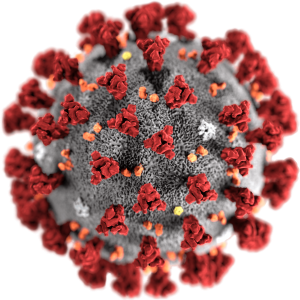

What is coronavirus?

It is caused by a member of the coronavirus family that has never
been encountered before. Like other coronaviruses, it has
transferred to humans from animals. The World Health Organisation
(WHO) has declared it a pandemic.
Coronaviruses are a large family of zoonotic viruses that cause
illness ranging from the common cold to severe respiratory
diseases. Zoonotic means these viruses are able to be transmitted
from animals to humans.There are several coronaviruses known to be
circulating in different animal populations that have not yet
infected humans. COVID-19 is the most recent to make the jump to
human infection.
Coronaviruses are a family of viruses that cause disease in
animals. Seven, including the new virus, have made the jump to
humans, but most just cause cold-like symptoms.
Two other coronaviruses – Middle East respiratory syndrome (Mers)
and severe acute respiratory syndrome (Sars) – are much more
severe, having killed more than 1,500 people between them since
2002.
How COVID-19 started?
In December 2019, a cluster of pneumonia cases, caused by a newly
identified β-coronavirus, occurred in Wuhan, China. This
coronavirus, was initially named as the 2019-novel coronavirus
(2019-nCoV) on 12 January 2020 by World Health Organization (WHO).
WHO officially named the disease as coronavirus disease 2019
(COVID-19) and Coronavirus Study Group (CSG) of the International
Committee proposed to name the new coronavirus as (SARS-CoV-2),
both issued on 11 February 2020.
The source of the coronavirus is believed to be a "wet market" in
Wuhan which sold both dead and live animals including fish and
birds.
Such markets pose a heightened risk of viruses jumping from
animals to humans because hygiene standards are difficult to
maintain if live animals are being kept and butchered on site.
Typically, they are also densely packed.
The animal source of the latest outbreak has not yet been
identified, but the original host is thought to be bats. Bats were
not sold at the Wuhan market but may have infected live chickens
or other animals sold there.
How does it spread?
COVID-19 - spreads from person to person in close proximity,
similar to other respiratory illnesses, such as the flu.Droplets
of bodily fluids - such as saliva or mucus - from an infected
person are dispersed in the air or on surfaces by coughing or
sneezing.These droplets can come into direct contact with other
people or can infect those who pick them up by touching infected
surfaces and then their face.According to scientists, coughs and
sneezes can travel several feet and stay suspended in the air for
up to 10 minutes.
Transmission is of particular concern on transport, where droplets
containing the coronavirus could pass between passengers or via
surfaces like aeroplane seats and armrests. The incubation period
of the coronavirus, the length of time before symptoms appear, is
between one and 14 days. Although not yet confirmed, Chinese
health authorities believe the virus can be transmitted before
symptoms appear, China where wildlife was also traded illegally.
Close contact with an infectious person, such as shaking hands, or
touching a doorknob, tabletop or other surfaces touched by an
infectious person, and then touching your nose, eyes, or mouth can
also transmit the virus.
Reports raised the possibility that the virus may be spread by
fecal contamination of the environment, such as through leaky
sewage pipes. Infections across multiple floors of a building due
to contaminated bathroom pipes was previously demonstrated for
SARS coronavirus.
What are the Symptoms?
According to the WHO, the most common symptoms of Covid-19 are
fever, tiredness and a dry cough. Some patients may also have a
runny nose, sore throat, nasal congestion and aches and pains or
diarrhoea. About 80% of people who get Covid-19 experience a mild
case – about as serious as a regular cold – and recover without
needing any special treatment.
In more severe cases, it can lead to pneumonia, multiple organ
failure and even death.
However, infected patients can also be asymptomatic, meaning they
do not display any symptoms despite having the virus in their
systems.
Fever and cough were the dominant symptoms whereas upper
respiratory symptoms and gastrointestinal symptoms were rare,
suggesting the differences in viral tropism as compared with
SARS-CoV, MERS-CoV.
The elderly and those with underlying disorders (i.e.,
hypertension, chronic obstructive pulmonary disease, diabetes,
cardiovascular disease), developed rapidly into acute respiratory
distress syndrome, septic shock, metabolic acidosis hard to
correct and coagulation dysfunction, even leading to the death
How deadly is it?
With more than 8,600 recorded deaths, the number of fatalities
from this new coronavirus has surpassed the toll of the 2002-2003
SARS outbreak, which also originated in China.
SARS killed about 9 percent of those it infected - nearly 800
people worldwide and more than 300 in China alone. MERS, which did
not spread as widely, was more deadly, killing one-third of those
infected.
While the new coronavirus is more widespread than SARS in terms of
case numbers, the mortality rate remains considerably lower at
approximately 3.4 percent, according to the WHO.
This coronavirus is a new virus so we can only estimate the
fatality rate of COVID-19 in these early stages.
Based on what we can see so far, COVID-19 is far less deadly to
infected patients than Ebola or MERS. However, the fact that this
coronavirus is so contagious and has crossed borders means
significantly more people are expected to die.
For example, Ebola has killed about 11,300 people since its
outbreak, a figure that COVID-19 has already surpassed. By
contrast, we are preparing for 8,000 to 12,000 COVID-19 deaths
this Summer alone.
How far it has spread?
The virus has spread from China all around the world, prompting
the WHO to designate the COVID-19 outbreak as a pandemic
Human-to-human transmissions became evident after cases were
recorded with no apparent link to China.
At least 14,750 people globally have died from COVID-19, as the
illness is officially known, while more than 350,000 infections
have been confirmed in at least 177 countries and territories as
of 23-march-2020.
The top five countries that have so far confirmed coronavirus
cases are:
- China: 81000+
- Italy: 59000+
- United States: 41000+
- Spain: 33000+
- Germany: 28000+
India stands at 41st place with 467 cases active. The
total number of cases all around the earth are 360000 as of
23-march-2020.
What is being done to stop it?
Scientists around the globe are racing to develop a vaccine but
have warned it is not likely one will be available for mass
distribution before 2021.
Meanwhile, Chinese authorities have effectively sealed off Wuhan
and placed restrictions on travel to and from several other
cities, affecting some 60 million people. Other countries have
since followed suit with total lockdowns, closing schools,
restaurants, bars, and sports clubs, and also issuing mandatory
work-from-home decrees.
International airlines have cancelled flights the world over. Some
countries have banned non-citizens from entering their
territories, and several more have evacuated their citizens from
abroad.
Some countries are putting their citizens on lockdown to stop it
from spreading more. The list of countries which has declared
lockdowns are: Belgium, France, Italy, Ireland, UK, Germany.
India has also declared lockdown it's several states. The states
and UTs that have now imposed full lockdowns include Delhi,
Rajasthan, West Bengal, Kerala Chandigarh, Goa, J&K, Ladakh,
Uttarakhand, Jharkhand, Bihar, Telangana, Andhra Pradesh,
Chhattisgarh, Himachal Pradesh, Arunachal Pradesh, Nagaland,
Haryana, Tripura, Karnataka, Assam and Gujarat. Maharashtra,
Punjab and Puducherry have imposed curfews, as mentioned above.
Uttar Pradesh has implemented a partial lockdown as has Madhya
Pradesh and Odisha.
Is this a global crisis?
The World Health Organization (WHO) has declared the coronavirus
outbreak a pandemic as the virus continued to spread across the
world.
Yes, this outbreak is a global health emergency, the WHO said on
January 30, raising the alarm further on March 11 when it declared
the crisis a pandemic. The international health alert is a call to
countries around the world to coordinate their response under the
guidance of the WHO.
There have been five global health emergencies since 2005 when the
declaration was formalised: swine flu in 2009, polio in 2014,
Ebola in 2014, Zika in 2016 and Ebola again in 2019.
Are you immune to it?
Viruses that spread quickly usually come with lower mortality
rates and vice versa. As the virus is an entirely new strain, it
is believed that there is no existing immunity in anyone it will
encounter. Some level of immunity will naturally develop over
time, but this means that those with compromised immune systems,
such as the elderly or sick, are most at risk of becoming severely
ill or dying from the coronavirus.
Although the total number of deaths has now exceeded those
recorded during the 2002-2003 outbreak of severe acute respiratory
syndrome (SARS), the current mortality rate is much lower than
that of SARS. The coronavirus mortality rate stands at 2.4
percent, while SARS killed 9.6 percent of those infected.
If the virus keeps spreading, eventually so many people will have
been infected and (if they survive) become immune that the
outbreak will fizzle out on its own as the germ finds it harder
and harder to find a susceptible host. This phenomenon is known as
herd immunity.
Vaccines create herd immunity too, either when given widely or
sometimes when administered in a “ring” around a new case of a
rare infection. That’s how diseases like smallpox were eradicated
and why polio is close to being erased. Various vaccine efforts
are under way for this coronavirus, but they may not be ready for
more than a year.
The coronavirus is new, so it doesn’t appear that anyone is immune
to it: that’s what lets it spread and why it can have such severe
effects in some people. For herd immunity to take hold, people
must become resistant after they are infected. That occurs with
many germs: people who are infected and recover become resistant
to getting that disease again, because their immune system is
charged with antibodies able to defeat it.
Who is at high risk?
You may be at high risk from coronavirus if you:
- have had an organ transplant.
- are having certain types of cancer treatment.
- have blood or bone marrow cancer, such as leukaemia.
-
have a severe lung condition, such as cystic fibrosis or severe
asthma.
-
have a condition that makes you much more likely to get
infections.
- are taking medicine that weakens your immune system.
-
are pregnant.
- have a serious heart condition.
If you're at high risk of getting seriously ill from coronavirus,
there are extra things you should do to avoid catching it. These
include:
-
Not leaving your home – you should not go out to do shopping,
visit friends or family, or attend any gatherings
-
Avoiding close contact with other people in your home as much as
possible
What if I got recovered?
Even those who recover from COVID-19 might not be immune forever.
Unfortunately, we don’t know yet whether or not the body’s immune
response would protect you from subsequent infection
It is known that exposure to the four seasonal human coronaviruses
(that cause the common cold) does produce immunity to those
particular viruses. In those cases, the immunity lasts longer than
that of seasonal influenza, but is probably not permanent
The majority of virologists are convinced that recovered COVID-19
patients are immune to the new SARS-CoV-2 virus after the
infection has run its course. After all, the body's own immune
system has produced precisely those antibodies during the
infection that render the pathogen harmless.
This all-clear also applies to those who had only a weak course of
the disease and showed a few symptoms. Nevertheless, their immune
systems reacted to the pathogen and produced the corresponding
antibodies. A renewed infection with the new coronavirus is
therefore highly unlikely.
However,A small study of 12 patients discharged from hospital
showed that two or three had reduced lung function and In some
patients, lung function could decline by about 20 to 30% after
recovery. Also the computer tomography have shown fluid- or
debris-filled sacs in the lungs, which may get progressively worse
as the illness develops. Nevertheless it is too early to confirm
any long-term effects.
What about other coronaviruses?
Severe acute respiratory syndrome (Sars) and Middle Eastern
respiratory syndrome (Mers) are both caused by coronaviruses that
came from animals. In 2002, Sars spread virtually unchecked to 37
countries, causing global panic, infecting more than 8,000 people
and killing more than 750. Mers appears to be less easily passed
from human to human, but has greater lethality, killing 35% of
about 2,500 people who have been infected.